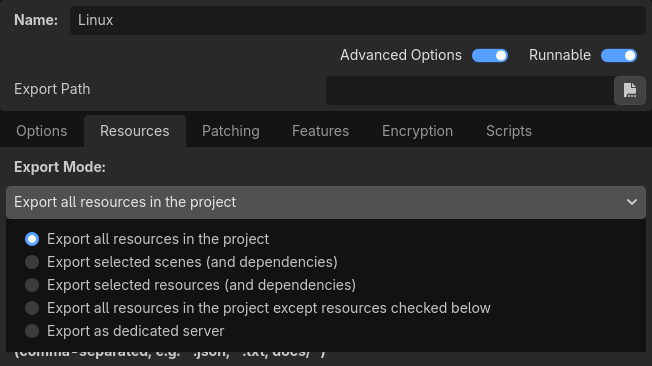

Xuất dự án
Tại sao cần xuất?
Ban đầu, Godot không có cách nào để xuất dự án. Các nhà phát triển phải tự biên dịch các tệp nhị phân phù hợp và build gói cho từng nền tảng một cách thủ công.
Khi ngày càng nhiều nhà phát triển (và cả những người không phải lập trình viên) bắt đầu sử dụng nó, và khi công ty chúng tôi bắt đầu nhận nhiều dự án cùng lúc, rõ ràng đây là một điểm nghẽn.
Trên PC
Phân phối một dự án game trên PC với Godot khá dễ. Đặt tệp nhị phân Godot vào cùng thư mục với tệp project.godot, rồi nén thư mục dự án là xong.
Nghe thì đơn giản, nhưng có lẽ có vài lý do khiến nhà phát triển không muốn làm vậy. Lý do đầu tiên là việc phân phối hàng loạt tệp có thể không được mong muốn. Một số nhà phát triển không thích người dùng tò mò soi xem game được làm như thế nào, số khác thấy cách này thiếu gọn gàng, v.v. Một lý do khác là nhà phát triển có thể muốn dùng một tệp nhị phân được biên dịch riêng, có kích thước nhỏ hơn, tối ưu hơn và không kèm các công cụ như trình chỉnh sửa và trình gỡ lỗi.
Cuối cùng, Godot có một hệ thống đơn giản nhưng hiệu quả để tạo DLC dưới dạng các tệp gói bổ sung.
Trên di động
Tình huống tương tự trên các nền tảng di động còn tệ hơn một chút. Để phân phối một dự án trên các thiết bị đó, một tệp nhị phân cho từng nền tảng được build, rồi được thêm vào một dự án native cùng với dữ liệu game.
Điều này có thể phiền toái vì nhà phát triển phải làm quen với SDK của từng nền tảng trước cả khi có thể xuất. Dù việc học từng SDK luôn được khuyến khích, bị buộc phải làm vào lúc không mong muốn có thể gây khó chịu.
Cách làm này còn một vấn đề khác: các thiết bị khác nhau ưu tiên một số dữ liệu ở các định dạng khác nhau để chạy. Ví dụ điển hình nhất là nén texture. Mọi phần cứng PC đều dùng nén S3TC (BC) và định dạng này đã được chuẩn hóa hơn một thập kỷ, nhưng các thiết bị di động dùng các định dạng nén texture khác, chẳng hạn ETC1 và ETC2.
Menu xuất
Sau nhiều lần thử các quy trình xuất khác nhau, quy trình hiện tại đã chứng tỏ là hoạt động tốt nhất. Tại thời điểm viết bài này, chưa phải mọi nền tảng đều được hỗ trợ, nhưng số nền tảng được hỗ trợ vẫn tiếp tục tăng.
Để mở menu xuất, nhấn nút :

Menu xuất sẽ mở ra. Tuy nhiên, nó sẽ hoàn toàn trống. Đó là vì chúng ta cần thêm một export preset.

Để tạo một export preset, nhấn nút Add… ở phía trên menu xuất. Thao tác này sẽ mở một danh sách thả xuống các nền tảng để chọn cho export preset.

Các tùy chọn mặc định thường đủ để xuất, nên thường không cần chỉnh sửa. Tuy nhiên, nhiều nền tảng yêu cầu cài thêm công cụ (SDK) để có thể xuất. Ngoài ra, Godot cần cài export template để tạo gói. Menu xuất sẽ báo lỗi khi thiếu thứ gì đó và không cho phép người dùng xuất cho nền tảng đó cho đến khi họ khắc phục:

Khi đó, người dùng nên quay lại tài liệu và làm theo hướng dẫn về cách thiết lập đúng nền tảng đó.
Các nút ở cuối menu cho phép bạn xuất dự án theo vài cách khác nhau:
Export All: Xuất dự án thành một bản build chơi được (tệp thực thi Godot và dữ liệu dự án) cho tất cả các preset đã định nghĩa. Mọi preset phải có Export Path được định nghĩa thì cách này mới hoạt động.
Export Project: Xuất dự án thành một bản build chơi được (tệp thực thi Godot và dữ liệu dự án) cho preset đang chọn.
Export PCK/ZIP: Xuất resource của dự án thành gói PCK hoặc ZIP. Đây không phải bản build chơi được, nó chỉ xuất dữ liệu dự án mà không có tệp thực thi Godot.
Export template
Phải cài export template thì mới xuất được dự án. Để quản lý export template, vào .

Thao tác này sẽ mở trình quản lý export template.

Tại đây bạn có thể thấy mọi export template đã và chưa được cài. Có hai cách để cài export template. Cách thứ nhất, bạn có thể đánh dấu ô cho nền tảng và kiến trúc muốn dùng, rồi nhấn nút .
Ghi chú
Nếu không chắc mình cần kiến trúc nào, hãy xem trang xuất của nền tảng tương ứng để có mô tả chi tiết.
Bên dưới các tùy chọn nền tảng có một tùy chọn khác tên là ICU Data. Tùy chọn này cần thiết cho emoji và các ngôn ngữ sau:
Tiếng Miến Điện
Tiếng Trung
Tiếng Nhật
Tiếng Hàn
Tiếng Khmer Trung
Tiếng Lào
Tiếng Thái
Nếu nhấn nút ở góc trên bên phải cửa sổ, bạn có thể cài template từ một tệp TPZ (về cơ bản là một tệp nén ZIP). Bạn có thể tải tệp TPZ chứa mọi export template từ trang tải xuống của website.
Dùng tệp TPZ cho mọi nền tảng không có lợi thế gì đặc biệt. Về chức năng, nó hoàn toàn giống hệt, và sẽ chiếm nhiều dung lượng hơn so với việc chỉ chọn những gì bạn cần.
Tùy chọn resource
Khi xuất, Godot lập danh sách mọi tệp cần xuất rồi tạo gói. Có 5 chế độ xuất khác nhau:
Xuất tất cả resource trong dự án
Xuất các scene đã chọn (và các phụ thuộc)
Xuất các resource đã chọn (và các phụ thuộc)
Xuất mọi resource trong dự án, trừ các resource được đánh dấu bên dưới
Xuất dưới dạng máy chủ chuyên dụng

Export all resources in the project sẽ xuất mọi resource trong dự án. Export selected scenes và Export selected resources cung cấp cho bạn danh sách các scene hoặc resource trong dự án, và bạn phải chọn từng scene hoặc resource muốn xuất.

Export all resources in the project except resources checked below làm đúng như tên gọi, mọi thứ sẽ được xuất trừ những gì bạn chọn trong danh sách.
Export as dedicated server sẽ loại bỏ mọi thành phần hình ảnh khỏi dự án và thay chúng bằng placeholder. Bao gồm Cubemap, CubemapArray, Material, Mesh, Texture2D, Texture2DArray, Texture3D. Bạn cũng có thể vào danh sách tệp và chỉ định những resource hình ảnh cụ thể mà bạn muốn giữ lại.
Ghi chú
Các tệp và thư mục có tên bắt đầu bằng dấu chấm sẽ không bao giờ được đưa vào dự án đã xuất. Điều này nhằm ngăn các thư mục quản lý phiên bản như .git bị đưa vào tệp PCK đã xuất.
Bên dưới danh sách resource có hai bộ lọc có thể thiết lập. Bộ lọc thứ nhất cho phép các tệp không phải resource như .txt, .json và .csv được xuất cùng dự án. Bộ lọc thứ hai có thể dùng để loại trừ mọi tệp thuộc một kiểu nhất định mà không phải bỏ chọn thủ công từng tệp. Ví dụ, các tệp .png.
File cấu hình
Cấu hình xuất được lưu trong hai tệp, cả hai đều nằm trong thư mục dự án:
export_presets.cfg: Tệp này chứa phần lớn cấu hình xuất và có thể commit an toàn vào hệ thống quản lý phiên bản. Trong đó không có gì mà thông thường bạn phải giữ bí mật..godot/export_credentials.cfg: Tệp này chứa các tùy chọn xuất được coi là bí mật, như mật khẩu và khóa mã hóa. Thông thường bạn không nên commit tệp này vào hệ thống quản lý phiên bản hay chia sẻ với người khác, trừ khi bạn biết chính xác mình đang làm gì.
Vì tệp credentials thường không được đưa vào hệ thống quản lý phiên bản, một số tùy chọn xuất sẽ bị thiếu nếu bạn clone dự án sang máy mới. Cách dễ nhất để xử lý là sao chép thủ công tệp này từ vị trí cũ sang vị trí mới.
Xuất từ dòng lệnh
Trong sản xuất, việc tự động hóa build rất hữu ích, và Godot hỗ trợ điều này qua các tham số dòng lệnh --export-release và --export-debug. Xuất từ dòng lệnh vẫn cần một export preset để định nghĩa các tham số xuất. Một lệnh gọi cơ bản sẽ như sau:
godot --export-release "Windows Desktop" some_name.exe
Lệnh này sẽ xuất ra some_name.exe, giả sử có một preset tên "Windows Desktop" và tìm thấy template. (Tên export preset phải được đặt trong dấu ngoặc kép nếu chứa khoảng trắng hoặc ký tự đặc biệt.) Đường dẫn đầu ra là tương đối với đường dẫn dự án hoặc tuyệt đối; nó không tính theo thư mục nơi lệnh được gọi.
Phần mở rộng của tệp đầu ra nên khớp với phần mở rộng mà quá trình xuất của Godot sử dụng:
Windows:
.exemacOS:
.apphoặc.zip(hoặc.dmgkhi xuất từ macOS)Linux: Phần mở rộng bất kỳ (kể cả không có).
.x86_64thường được dùng cho tệp nhị phân x86 64-bit.HTML5:
.zipAndroid:
.apkiOS:
.zip
Bạn cũng có thể cấu hình để chỉ xuất tệp PCK hoặc ZIP, cho phép dùng một tệp gói chính đã xuất với nhiều tệp thực thi Godot. Khi làm vậy, vẫn phải chỉ định tên export preset trên dòng lệnh:
godot --export-pack "Windows Desktop" some_name.pck
Thường sẽ hữu ích khi kết hợp cờ --export-release với cờ --path, để bạn không cần cd vào thư mục dự án trước khi chạy lệnh:
godot --path /path/to/project --export-release "Windows Desktop" some_name.exe
Xem thêm
Xem Bài hướng dẫn dòng lệnh để biết thêm thông tin về cách dùng Godot từ dòng lệnh.
Định dạng tệp gói PCK và ZIP
Mỗi định dạng đều có ưu và nhược điểm. PCK là định dạng mặc định và được khuyến nghị cho hầu hết trường hợp, nhưng tùy nhu cầu, bạn có thể muốn dùng tệp nén ZIP thay thế.
Định dạng PCK:
Định dạng không nén. Kích thước tệp lớn hơn, nhưng đọc/ghi nhanh hơn.
Không đọc và ghi được bằng các công cụ thường có sẵn trên hệ điều hành của người dùng, dù có các công cụ bên thứ ba để giải nén và tạo tệp PCK.
Định dạng ZIP:
Định dạng có nén. Kích thước tệp nhỏ hơn, nhưng đọc/ghi chậm hơn.
Đọc và ghi được bằng các công cụ thường có sẵn trên hệ điều hành của người dùng. Điều này có thể hữu ích để việc làm mod dễ dàng hơn (xem thêm Xuất gói, bản vá và mod).
Cảnh báo
Do một lỗi đã biết, khi dùng tệp ZIP làm tệp gói, tệp nhị phân đã xuất sẽ không tự động thử dùng nó. Vì vậy, bạn phải tạo một launcher script mà người chơi có thể nhấp đúp hoặc chạy từ terminal để khởi chạy dự án:
:: launch.bat (Windows)
@echo off
my_project.exe --main-pack my_project.zip
# launch.sh (Linux)
./my_project.x86_64 --main-pack my_project.zip
Lưu launcher script và đặt nó vào cùng thư mục với tệp nhị phân đã xuất. Trên Linux, nhớ cấp quyền thực thi cho launcher script bằng lệnh chmod +x launch.sh.